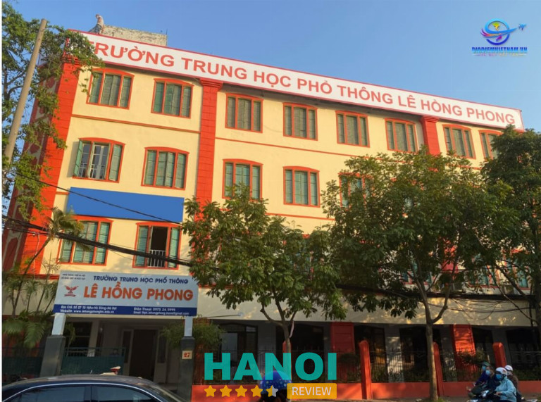
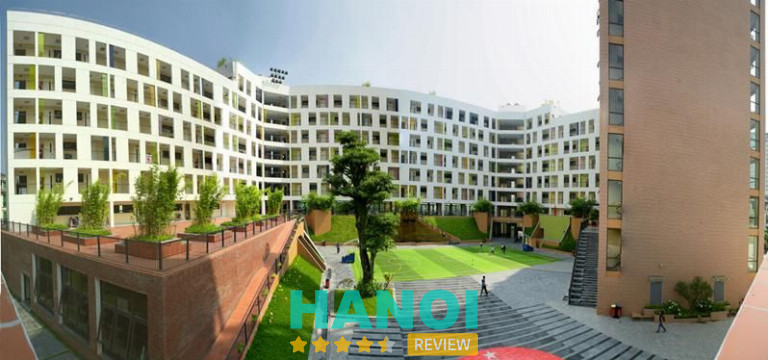
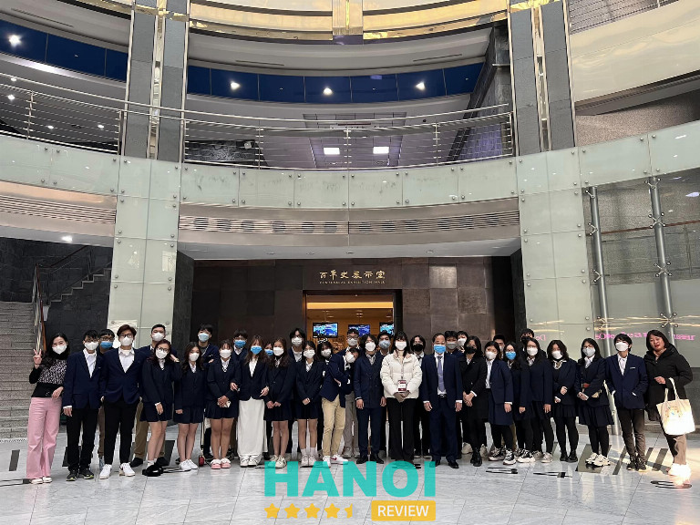
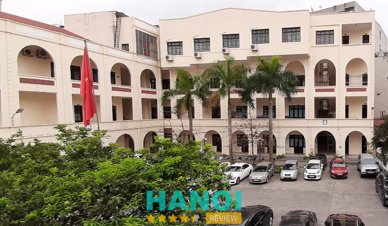
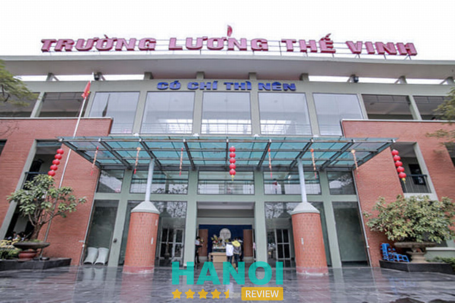
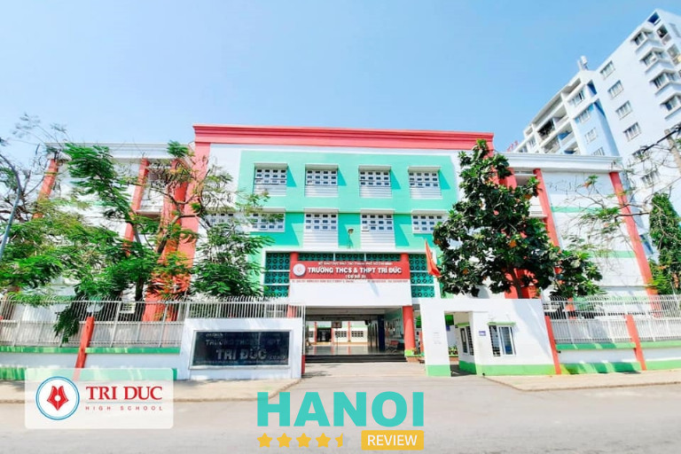
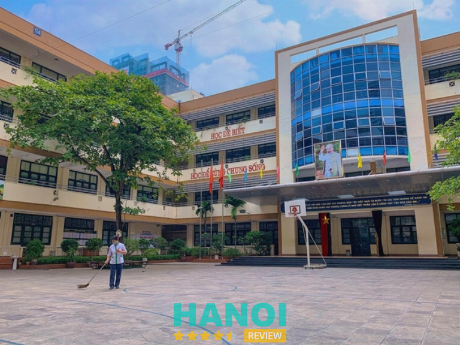

10 Trường cấp 3 dân lập tại Hà Nội chất lượng tốt, học phí hợp lý
Hiện nay, việc lựa chọn các trường cấp 3 dân lập tại Hà Nội để con theo học là vấn đề đang được nhiều bậc phụ huynh quan tâm. Các trường dân lập cấp 3 có môi trường học tập lý tưởng, quy trình đào tạo bài bản sẽ giúp các em chuẩn bị một hành trang tốt và đầy đủ nhất trước khi bước vào cánh cửa đại học.
Top 10 trường cấp 3 dân lập ở Hà Nội đào tạo uy tín nhất
Nếu bạn đang có ý định cho con theo học ở trường THPT dân lập nhưng vẫn còn đang băn khoăn không biết nên lựa chọn đơn vị nào uy tín, chất lượng giảng dạy tốt thì đừng nên bỏ lỡ bài viết dưới đây.
Bởi HaNoiReview sẽ giúp các bạn tổng hợp và liệt kê danh sách 10 trường cấp 3 dân lân được đánh giá uy tín bậc nhất khu vực Hà Thành để bạn sẽ dàng hơn trong việc lựa chọn của mình.
Trường THPT Lê Hồng Phong
Trường THPT Lê Hồng Phong nằm trên đường Tô Hiệu, thuộc quận Hà Đông (Hà Nội) đã có tuổi đời với hơn 25 năm thành lập, xây dựng và phát triển kể từ năm 1998. Ngay từ khi thành lập và đến bây giờ, trường luôn được đánh giá cao và trở thành một trong những điểm sáng của ngành giáo dục tại mảnh đất ngàn năm văn hiến Hà Nội. Sau bao năm hoạt động, đơn vị đã nhận đạt không ít các bằng khen về công tác giảng dạy.

Một số ưu điểm nổi bật về chương trình đào tạo của trường THPT Lê Hồng Phong:
- Đội ngũ giáo viên có trình độ chuyên môn cao, có tâm và đã được đào tạo nghiệp vụ bài bản.
- Chương trình học mang tính ứng dụng cao: Ngay sau khi học lý thuyết của các môn Hóa học, Vật Lý, Tin học,… Các bạn học sinh sẽ được thực hành tại phòng thí nghiệm riêng với những trang thiết bị hỗ trợ hiện đại, được nhập khẩu từ nước ngoài.
- Môi trường học đảm bảo để các học sinh có thể phát triển toàn diện cả về thể chất, tư duy lẫn nhân cách.
- Có quy định chuẩn đầu ra tiếng anh IELTS nghiêm ngặt, bắt buộc phải từ 6.5 trở lên.
- Có thể học thêm ngoại ngữ bổ trợ thứ 2, bao gồm tiếng Hàn, Trung, Nhật,…
- Quỹ học bổng cao lên đến 1 tỷ đồng nhằm khen thưởng và khích lệ tinh thần học tập cho những học sinh có thành tích xuất sắc.
- Cơ sở vật chất và trang thiết bị được đầu tư mới, hiện đại giúp nâng cao chất lượng đào tạo giáo dục.
- Có nhiều CLB và chương trình học động ngoại khóa để các bạn giải stress và thoải mái hơn sau những giờ học căng thẳng trên lớp.
Tính đến nay, đơn vị đã đào tạo được hàng chục khóa học sinh với trăm em tốt nghiệp THPT mỗi năm. Đặc biệt, trong những năm gần đây, số lượng học sinh của trường tiếp tục theo học tại các điểm Đại học, Cao đẳng trên địa bàn luôn đạt tỷ lệ trên 90%. Nhiều thế hệ cựu học sinh đã trở thành bác sĩ, tiến sĩ, kỹ sư cùng với hàng nghìn nhân lực lao động có tay giỏi đã và đang làm việc trong nhiều ngành nghề trên cả nước.
Thông tin liên hệ:
- Địa chỉ: 27 Tô Hiệu, P. Vạn Phúc, Q. Hà Đông, Hà Nội
- Điện thoại: 0973 245 995
- Email: thpt.lehongphong.hanoi@gmail.com
- Website: lehongphonghn.edu.vn
- Fanpage: FB.com/LeHongPhongHN
Trường THPT Marie Curie
Marie Curie là một điểm trường giáo dục có nhiều cấp học từ lớp 1 đến lớp 12 theo chương trình giảng dạy hiện hành của Bộ. Với hơn 25 năm xây dựng và phát triển, THPT Marie Curie hiện đang nằm trong top những ngôi trường dân lập chất lượng hàng đầu tại Hà Nội.

Không những vậy, với bề dày truyền thống hiếu học trường còn nổi tiếng nhờ những thành tích vượt trội như đào tạo học sinh giỏi thuộc khối cấp 2 và cấp 3. Tại đây, ngoài giảng dạy những kiến thức lý thuyết theo chương trình cơ bản, trường còn đặc biệt chú trọng vào việc giáo dục – bồi dưỡng – rèn luyện nhân cách, trí tuệ, kỹ năng sống và chăm sóc sức khoẻ cho các em học sinh. Để mỗi một học sinh sau khi tốt nghiệp đều trở thành công dân toàn diện, có năng lực và phẩm chất tốt.
Bên cạnh những lớp truyền thống học phân ban, đơn vị còn tạo thêm các lớp tiếng Anh theo hệ chuẩn quốc tế. Theo đó, giáo viên bản ngữ sẽ trực tiếp giảng dạy bằng những phương pháp và phương tiện dạy học hiện đại và tân tiến trên thế giới. Để thông qua chương trình học này, các em sẽ có đủ điều kiện về trình độ ngoại ngữ theo học ở những trường nước ngoài, hộp nhập cùng bạn bè quốc tế. Do đó, quý phụ huynh có thể cân nhắc về chương trình hợp tác này của trường để các con có cơ hội tiếp xúc với tiếng Anh chất lượng cao ngay từ lớp 1.
Thông tin liên hệ:
- Địa chỉ: Trần Văn Lai, KĐT Mỹ Đình – Mễ Trì, Mỹ Đình 1, Q. Nam Từ Liêm, Hà Nội
- Điện thoại: 024 3256 5353
- Email: c3mariecurie@hanoiedu.vn
- Website: mariecuriehanoischool.com
- Fanpage: FB.com/mariecurie.hn
GỢI Ý: 5 Trung tâm gia sư tại Hà Nội chất lượng tốt, chi phí thấp
Trường THPT dân lập Nguyễn Bỉnh Khiêm
Trường THPT dân lập Nguyễn Bỉnh Khiêm chính thức được thành lập vào năm 1993 là cơ sở dạy học bán trú với 100% học sinh ăn uống và nghỉ trưa tại trường.
Ban đầu trường hoạt động dưới hình thức thuê, tuy nhiên hiện tại đơn vị đã tự chủ xây dựng lại cơ sở khang trang, hiện đại. Cùng với chất lượng đào tạo tốt, trường đang dần khẳng định được vị thế của mình ở thị trường giáo dục tại Hà Nội.
Trường sở hữu đội ngũ nhân lực lớn, bao gồm: 220 giáo viên, công nhân viên chức. Trong số đó có 5 giảng viên bậc tiến sĩ, 23 giáo viên bậc thạc sĩ, 136 cử nhân và cán bộ nghiệp vụ có trình độ từ Cao đẳng trở lên. Đảm bảo mang đến chất lượng giảng dạy tốt nhất dành cho học sinh.
Ngoài ra, trường THPT Nguyễn Bỉnh Khiêm còn nhận được một số thành tựu to lớn trong suốt quá trình hoạt động của mình. Điển hình như công nhận trường đạt chuẩn quốc gia, Chính phủ trao tặng bằng khen, nhận được huân chương lao động hạng 3,… Để có được những thành quả như vậy, trường đã không ngừng cố gắng triển khai mô hình giáo dục chuyên về hướng nghiệp nhằm giảng dạy các kỹ năng sống thực tế và định hướng các em đến gần hơn với quá trình lao động trong xã hội thực tế.
Thông tin liên hệ:
- Địa chỉ: 6 Trần Quốc Hoàn, Dịch Vọng Hậu, Quận Cầu Giấy, Hà Nội
- Điện thoại: 024 3754 5433
- Email: info@nbk.edu.vn
- Website: nbk.edu.vn
- Fanpage: FB.com/nbk.edu.vn
Trường THPT Đào Duy Từ
Trường THPT Đào Duy Từ chính là mô hình giáo dục hiện đại nhất trong các trường THPT hiện nay. Bởi mô hình này kết hợp giữa tính năng động và tự chủ của cơ chế tư thục đặc trưng. Đặc biệt, việc đào tạo Khoa chuyên Vật Lý chính là thế mạnh của đơn vị giúp tạo ra hàng trăm nhân tài hàng đầu cho quốc quốc gia nhờ bề dày kinh nghiệm của trường cũng như các mối quan hệ đối ngoại cùng môi trường học tập tuyệt vời.
Mặc dù trong giai đoạn hoạt động ban đầu khá khó khăn nhưng nhờ sự kiên trì phấn đấu, trường đã có thể phát triển vượt bậc và gặt hái được nhiều thành công như mong đợi. Trường THPT Đào Duy Từ tự hào là ngôi trường sở hữu số lượng lớn học sinh đạt được thành tích cao trong các kì thi học sinh giỏi cũng như có tỉ lệ kết quả điểm thi cao nhất trong các kỳ thi đại học hàng năm.

Cụ thể, trường được Bộ Giáo dục và Đào tạo công nhận có kết quả thi đại học cao nhất toàn quốc. Đặc biệt, trong những năm gần đây, đơn vị nằm trong top 3 trường THPT tại Hà Nội có số lượng học sinh tham dự kỳ thi học sinh giỏi Quốc gia lớp 12 các môn Hóa Học, Toán, Ngữ Văn, Vật lý, Tiếng Anh,… và 100% số học sinh khi tham dự đều có giải. Đó là những thành tích khích lệ tinh thần giữa thầy (cô) và trò của nhà trường, đồng thời qua đó cũng phần nào thể hiện được năng lực giáo dục của đơn vị.
Ngoài ra, trường cũng thường xuyên hợp tác với các đơn vị giáo dục khác trên quốc tế để đưa học sinh của mình sang giao lưu và học hỏi nền văn hóa học tập mới tại các quốc gia tiên tiến như Nhật Bản, Hàn Quốc, Thái Lan, Trung Quốc,…
Thông tin liên hệ:
- Địa chỉ: 182 Lương Thế Vinh, P. Thanh Xuân Bắc, Q. Thanh Xuân, Hà Nội
- Điện thoại: 024 3553 4221
- Email: info.daoduytu@gmail.com
- Website: thptdaoduytu.vn
- Fanpage: FB.com/thptdaoduytuhn
THAM KHẢO: 10 Công ty tư vấn du học tại Hà Nội uy tín, tận tâm nhất
Trường THPT Anhxtanh
Anhxtanh là một trong 5 trường THPT dân lập đầu tiên ở Hà Nội được thành lập từ năm 1995 bởi các GS và viện sĩ thuộc Viện Hàn lâm Khoa học & Công nghệ Quốc Gia, viện Vật Lý. Trường được mở ra và hoạt động với mong muốn có thể đáp ứng nhu cầu học tập với chất lượng giáo dục tốt nhất cho học sinh.
Học viện luôn tiên phong trong quá trình xây dựng những chương trình đào tạo mới và đồng thời cập nhật các chương trình đã được các đơn vị giáo dục tại các nước tiên tiến áp dụng thành công. Từ đó, có thể mang lại cho học sinh Việt Nam những chương trình học đạt chuẩn quốc tế.

Hiện trường đang giảng dạy cho hơn 600 học sinh dưới sự dẫn dắt của đội ngũ giáo viên giỏi và tận tâm. Điểm đặc biệt nhất của trường đó là không chỉ dạy các kiến thức lí thuyết có trong sách vở mà còn kết hợp song song với những buổi hoạt động ngoại khóa sôi nổi, đầy thú vị giúp các em có thể tiếp thu kiến thức thực tế một cách nhanh hơn và không bị nhàm chán.
Ngoải ra, trường sẽ phân chia học sinh thành hai khối lớp, gồm lớp chất lượng cao và lớp thường dựa trên vào bài kiểm tra năng lực và kết quả học tập của các em. Qua đó, đảm bảo trình độ học được đồng đều và theo kịp các bạn bè. Trong quá trình học tập, nếu kết quả thông qua các kỳ thi của học sinh thăng hạng thì trường sẽ xếp lại lớp cho các em theo đúng trình độ và năng lực. Cũng vì thế mà nhiều năm qua trường luôn nhận được những phản hồi tích cực từ các bậc phụ huynh về sự tiến bộ của các em trong quá trình học tập.
Thông tin liên hệ:
- Địa chỉ: 290 Tây Sơn, P. Trung Liệt, Q. Đống Đa, Hà Nội
- Điện thoại: 024 3232 3264
- Email: ax@anhxtanh.edu.vn
- Website: anhxtanh.edu.vn
- Fanpage: FB.com/anhxtanh.hanoi
Trường Phổ thông Đoàn Thị Điểm
Khi nhắc đến danh sách những ngôi trường dân lập giáo dục uy tín nhất trên địa bàn Hà Nội thì không thể nào bỏ qua cái tên Đoàn Thị Điểm. Nơi đây từ lâu đã trở thành địa điểm đáng tin cậy của nhiều phụ huynh và học sinh từ các cấp bậc Tiểu học, Trung học cơ sở và Trung học phổ thông. Vào năm 2013, đơn vị vinh dự khi được công nhân là một trong những trường đạt chuẩn quốc gia với chất lượng dạy học tốt nhất.
Trường được xây dựng với hệ thống cơ sở vật chất khá hiện đại, khang trang và rộng rãi. Đơn vị sở hữu tổng diện tích khoảng 16.500 m2 với 130 phòng học và phòng chức năng được xây dựng theo tiêu chuẩn mới. Đặc biệt, trong mỗi phòng đều được trang bị máy móc tân tiến phục vụ cho công tác học tập và giảng dạy như máy chiếu, tivi,…
Không dừng lại ở đó, khu vực nhà ăn và phòng ngủ được thiết kế chuyên biệt, đảm bảo có thể phục vụ tối đa cho 2 nghìn học sinh bán trú tại trường. Khuôn viên và sân trường trồng nhiều cây xanh thoáng mát, rộng rãi để các em có thể thoải mái vui chơi sau những giờ học căng thẳng.
Bên cạnh việc giảng dạy và học tập kiến thức chuyên ngành, trường còn chú trọng vào việc giáo dục giới tính, nhân cách cũng như các kỹ năng sống cho các học sinh của mình thông qua những chương trình hoạt động ngoại khóa để các em có thể trở thành một công dân tốt, có trách nhiệm với bản thân, gia đình và xã hội. Với đội ngũ giáo viên giỏi, tâm huyết sẽ hết lòng yêu thương và dạy dỗ các con nên người.
Thông tin liên hệ:
- Địa chỉ: 48 Lưu Hữu Phước, P. Cầu Diễn, Q. Nam Từ Liêm, Hà Nội
- Điện thoại: 024 6265 2709
- Email: c2dldoanthidiem-ntl@hanoiedu.vn
- Website: thcs-doanthidiem.edu.vn
- Fanpage: FB.com/TruongThcsDoanThiDiem
Trường THPT dân lập Lương Thế Vinh
Tại Hà Nội, Lương Thế Vinh luôn là ngôi trường dân lập thú hút hàng nghìn sự quan tâm của phụ huynh và tranh nhau đăng ký cho con theo học mỗi khi đến mùa tuyển sinh. Dù mức học phí ở đây cao rất nhiều lần so với các trường công lập, tuy nhiên nhiều bậc phụ huynh vẫn chấp nhận cho con theo học.
Sở dĩ, trường THPT Lương Thế Vinh nổi tiếng đến như vậy là vì đơn vị thuộc khối những trường dân lập lập có thành tích giảng dạy tốt, giúp các học sinh đỗ vào các trường đại học top đầu mà ngay cả những trường chuyên trên địa bàn cũng phải dè chừng. Hiện đơn vị có cả hai cấp học bao gồm THCS và THPT. Trong đó, lượng học sinh đăng ký tuyển vào lớp 10 của trường thường đông kỷ lục.

Ngay từ khi mới thành lập, việc giáo dục học sinh toàn diện, không đặt nặng vấn đề thi cử luôn là kim chỉ nam hoạt động của trường. Theo đó, nhà trường không chú trọng vào quá trình học để lấy điểm hay kiến thức đơn thuần mà học để trau dồi cả kỹ năng sáng tạo – xử lý – thích nghi và kiến thức.
Sau hơn 20 năm kể từ khi thành lập, xây dựng và phát triển, trường THPT Lương Thế Vinh đã được cộng đồng giáo dục và phụ huynh học sinh đánh giá cao về chất lượng. Đơn vị trở thành một ngôi trường tri thức đáng tin cậy của nhiều bậc cha mẹ với mong muốn trao gửi con em mình để được học tập và phát triển một cách toàn diện.
Thông tin liên hệ:
- Địa chỉ: 35 Đinh Núp, P. Trung Hòa, Q. Cầu Giấy, Hà Nội
- Điện thoại: 024 3568 2603
- Website: luongthevinh.com.vn
- Fanpage: FB.com/ltvtantrieu
Xem thêm: 5 Trung tâm dạy kỹ năng sống cho trẻ tại Hà Nội chất lượng nhất
Trường THPT Newton
Xuất phát từ ước mơ xây dựng nên những thế hệ học sinh Việt Nam hội tụ đầy đủ tri thức và kỹ năng sống, giúp các em sẵn sàng hội nhập vào môi trường quốc tế, GS. TS Trần Văn Nhung đã sáng lập ra tổ hợp trường Tiểu học – THCS – THPT Newton. Ngôi trường được tạo nên nhằm rèn luyện tư duy sáng tạo, độc lập và học tập những kỹ năng cần thiết để các em có thể tự tin bước vào một kỷ nguyên xã hội mới với nhiều cơ hội lẫn thách thức đang chờ đợi.
Khi lựa chọn Newton, học sinh sẽ được học tập với chương trình đào tạo bài bản đạt chuẩn quốc tế. Đồng thời, có thể tiếp xúc với những công nghệ giáo dục tân tiến dưới sự hướng dẫn của đội ngũ giáo viên giỏi, giàu kinh nghiệm tại nơi đây.
Chương trình đào tạo theo tiêu chuẩn quốc tế, công nghệ giáo dục hiện đại, đội ngũ giáo viên trong và ngoài nước có trình độ chuyên môn cao. Trường THPT Newton tự tin có thể giúp học sinh phát huy hết mọi tiềm năng vốn có của bản thân và trở thành người bạn đồng hành trong việc định hướng con đường phát triển sau này của từng cá nhân.
Ngoài ra, ngôi trường còn đóng vai trò là cầu nối giúp mọi học sinh tiến vào các cánh cổng đại học của những trường danh tiếng ở Việt Nam và trên thế giới. Tạo điều kiện tốt nhất để các em có thể hội nhập vào môi trường toàn cầu.
Thông tin liên hệ:
- Địa chỉ: KĐT Goldmark City, 136 Hồ Tùng Mậu, P. Phú Diễn, Q. Bắc Từ Liêm, Hà Nội
- Điện thoại: 024 3202 2020
- Email: support@ngs.edu.vn
- Website: ngs.edu.vn
- Fanpage: FB.com/TruongTHCSTHPTNewton
Trường THPT Trí Đức
Một trong những trường nội trú đạt chuẩn chất lượng cao và luôn nằm trong top những trường THPT số một tại Việt Nam đó chính là trường THPT Trí Đức. Có thể nói nơi đây quy tụ học sinh thuộc nhiều tỉnh thành nhất trên cả nước.
Sở dĩ trường được đông đảo quý phụ huynh tin tưởng và muốn gửi gắm con em của mình đến học tập là vì nơi đây có cách thức giáo dục hiện đại, học thật và thi thật cũng như không chạy theo điểm số. Do đó, đây là môi trường để các em học tập và cạnh tranh lành mạnh với chính bản thân mình chứ không phải với bạn bè.
Trường năm gần sân vận động quốc gia Mỹ Đình, có diện tích gần 1 nghìn mét vuông. Mặc dù gần sông vận động thế nhưng trường hoàn toàn được cách biệt với môi trường ồn ào bên ngoài nhờ hệ thống hồ nước và cây xanh bao bọc. Khuôn viên bên trong trường luôn được vệ sinh sạch sẽ và thoáng mát để các em học sinh có thể vui chơi.

Đặc biệt, đơn vị còn sở hữu hệ thống cơ sở vật chất với nhiều phòng chức năng được phân khu riêng biệt như phòng học, phòng thí nghiệm, phòng vi tính, phòng ngoại ngữ, nghệ thuật, thư viện,…
Bên cạnh đó, với đội ngũ giáo viên giỏi cùng phương pháp học tập tối ưu sẽ giúp các em học sinh có thể chinh phục được mọi đỉnh cao trí tuệ. Hơn nữa, học sinh sẽ được định hướng ôn luyện thi đại học ngay từ đầu lớp 10 đến hết lớp 12 trên tinh thần tự giác.
Qua đó giúp các em xây dựng một nền móng vững chắc để học sinh có thể tự mang lại kết quả như mong đợi cho chính mình và có tỷ lệ đỗ vào các trường đại học top đầu cao hơn. Ngoài ra, với chương trình Anh văn quốc tế của, trường sẽ đào tạo và rèn luyện học sinh thi những chứng chỉ Tiếng anh như IELTS nhằm đưa học sinh đến gần hơn với bạn bè các nước khác và trở thành một công dân toàn cầu.
Ngoài thời gian học tập chính thức, học sinh ở đây còn có cơ hội tham gia vào nhiều CLB như bóng rổ, gym, bóng bàn, đàn organ, hip hop, guitar,… để khai phá những tiềm năng và sở thích riêng của bản thân cũng như giải tỏa mọi căng thẳng.
Với phương châm “sống tự lập” nên khi vào trường các em cũng được rèn luyện đức tính tự lập trong nếp ăn, nếp ngủ và cách đối nhân xử thế đúng mực. Do đo, bố mẹ hoàn toàn có thể yên tâm khi gửi con theo học ở đây.
Thông tin liên hệ:
- Địa chỉ: Tổ dân phố số 5, Phú Mỹ, P. Mỹ Đình II, Q. Nam Từ Liêm, Hà Nội
- Điện thoại: 024 3768 6902
- Email: c3triduc@hanoiedu.vn
- Website: tri-duc.edu.vn
- Fanpage: FB.com/thpttriduc
Xem thêm: 5 Trung tâm tiếng Anh tại Q. Hai Bà Trưng uy tín, nhiều khóa học
Trường THPT Nguyễn Tất Thành
Nguyễn Tất Thành là trường cấp 3 dân lập nổi tiếng ở chất lượng đào tạo tốt, học phí bình dân tại khu vực Hà Nội. Đơn vị là trực thuộc hệ phổ thông chất lượng cao do trường Đại học Sư phạm Hà Nội sáng lập.
Trường THPT Nguyễn Tất Thành được xây dựng cơ sở hạ tầng khang trang, tiện nghi và được đầu tư mạnh và máy móc thiết bị phục vụ trong công tác dạy và học. Qua đó tạo nên một không gian học tập thoải mái cho học sinh.

Bên cạnh đó, trường còn sở hữu đội ngũ giáo viên giỏi, có trình độ chuyên môn cao trong lĩnh vực khoa học cơ bản và giáo dục. Trong đó, hầu hết các giáo viên đều là những cán bộ giảng dạy chính của trường ĐH Sư phạm Hà Nội. Đảm bảo mang đến chương trình học tập chất lượng cùng phương pháp dạy học phù hợp cho tất cả các em học sinh.
Với thế mạnh về công tác quản lý học sinh của nhà trường, đơn vị đã phối hợp với Trung tâm anh ngữ Equest để tạo ra môi trường dạy Tiếng Anh chuẩn quốc tế cho học sinh. Do đó, nhiều phụ huynh và học sinh đã và đang rất hài lòng với dịch vụ này bởi nó thỏa mãn được nhu cầu học tiếng Anh chất lượng cao.
Thông tin liên hệ:
- Địa chỉ: 136 Xuân Thủy, P. Dịch Vọng Hậu, Q. Cầu Giấy, Hà Nội
- Điện thoại: 024 6684 9823
- Email: c23bcnguyentatthanh@hanoiedu.vn
- Website: ntthnue.edu.vn
- Fanpage: FB.com/ntthnue.edu.vn
5 Tiêu chí lựa chọn trường cấp 3 dân lập uy tín, chất lượng
Ngoài danh sách trường đã được bài viết giới thiệu, bạn còn có thể tìm kiếm những trường cấp 3 dân lập tốt khác trên địa bàn của mình. Tuy nhiên, để đảm bảo chất lượng đào tạo tốt và minh bạch trong các chính sách, học phí thì bạn cần lưu ý những tiêu chí sau đây:
- Chất lượng giáo dục: Để đánh giá được chất lượng giáo dục của một trường nào đó có tốt hay không, bạn nên tìm kiếm thông tin về những thành tích học thuật mà đơn vị đó đã đạt được. Chẳng hạn như tỷ lệ học sinh đậu tốt nghiệp, điểm sàn thi đại học và ngoài ra còn có những thành tích trong các kỳ thi HSG quốc gia hoặc quốc tế,…
- Chương trình đào tạo và phương pháp giảng dạy: Hãy tham khảo qua chương trình giảng dạy và phương pháp giáo dục của trường có tốt và tiên tiến hay không. Một số vấn đề bạn cần phải quan tâm như việc áp dụng công nghệ vàp giảng dạy, có các chương trình giao lưu ngoại ngữ hay hoạt động ngoại khóa,…
- Đội ngũ giáo viên: Một trường có sở hữu đội ngũ giáo viên giỏi, tận tâm chính là chiếc chìa khóa vạn năng giúp các em học sinh phát triển toàn diện.
- Cơ sở vật chất và môi trường học tập đảm bảo: Cơ sở vật chất hiện đại với đầy đủ các phòng học, phòng thí nghiệm, thư viện và sân chơi an toàn, thoải mái sẽ góp phần tạo điều kiện thuận lợi để quá trình học tập trở nên hiệu quả hơn.
- Văn hóa trường và cộng đồng học đường: Đây là điều đáng để quan tâm nhất hiện nay, bởi môi trường văn hóa tích cực, tôn trọng lẫn nhau sẽ giúp tinh thần các em trở nên thoải mái và mang đến một hành trình học tập đáng nhớ. Đồng thời giúp các bậc phụ huynh an tâm hơn khi trao gửi con em mình.
Trên đây là danh sách 10 trường cấp 3 dân lập uy tín hàng đầu ở thủ đô mà HaNoiReview muốn giới thiệu đến quý bạn đọc. Hy vọng từ những thông tin trên bài viết có thể giúp bạn dễ dàng hơn trong việc chọn lựa môi trường học tập phù hợp dành cho con em mình.
Có thể bạn quan tâm
- 10 Trung tâm dạy tiếng Hàn Quốc tại Hà Nội chất lượng nhất
- 10 Trung tâm luyện thi IELTS tại Hà Nội chất lượng, giá rẻ nhất
- 10 Trung tâm tiếng Nhật tại Hà Nội uy tín, chất lượng tốt nhất
- 5 Trung tâm dạy toán, toán tư duy tại Hà Nội được đánh giá cao
DOANH NGHIỆP: Đăng tải thông tin MIỄN PHÍ.
Tin đọc nhiều


Trở thành người đầu tiên bình luận cho bài viết này!